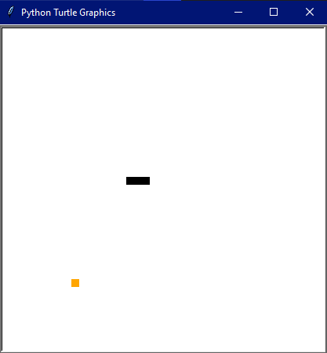

Battle Ship game en Python
Fecha de creación: 10/10/2020
Este programa fue generado como parte de la asignatura de Pensamiento computacional para ingeniería 10/10/2020.
El objetivo principal del programa es el ayudar a mantener activa la mente del jugador mediante el concepto de juegos
cognitivos, para ello se desarrollo un juego de Battleship en el lenguaje de programación Python. El juego se basa
principalmente en el manejo correcto de matrices. En lo que respecta a la jugabilidad, este cuenta con 2 modos de
juego uno en el que el tablero es generado de forma completamente aleatoria y otro donde el jugador personaliza su
tablero. Este programa, fue de gran ayuda para cimentar las bases de programación básica en mi desarrollo como
programador y game developer.
Generacion de videojuegos en 2D sencillos en Python
Fecha de creación: 26/10/2020 - 29/10/2020
Estos programas fueron generados entre el 26/10/2020 - 29/10/2020 como parte de la asignatura Herramientas
computacionales: el arte de la programación. Su objetivo es el de cimentar conocimientos básicos sobre el desarrollo de
videojuegos 2D sencillo en el lenguaje Python, utilizando una herramienta de manejo de versiones para controlar el
desarrollo colaborativo (Github). El catálogo de juegos incluye un Paint, Snake, Pacman, Juego de tiro parabólico y un
memorama. Cada uno de los juegos tiene ligeras modificaciones en su jugabilidad o elementos gráficos con el fin de
hacerlo más atractivo y/o complejo. Estos programas, fueron de gran ayuda para mejorar mis habilidades como programador.
Además, fue mi primer acercamiento a él game developer.

Deer Planet movent system and main menu protoptype en C#
Fecha de creación: 1/2/2022
Este programa fue generado como parte del periodo de servicio social invierno 2022 el 1/2/2022. El proyecto solidario
pretende generar conciencia y alentar a los jugadores a hacer uso de los bioplásticos. Para ello se propuso la
elaboración de un videojuego móvil en 2D inspirado en la jugabilidad de Pacman. Durante el desarrollo del proyecto fui
asignado a el desarrollo del sistema de movimiento del jugador. Para lograr esto, utilicé el Enginee Unity (C#) donde
pude generar el código fuente del sistema en incluso agregar animaciones al Sprite del jugador. Como extra, durante
este proyecto también me encargue programar la funcionalidad básica del menú principal de juego.
Estos programas/sistemas han sido de gran ayuda para desarrollarme como game developer y programador, ya que me
alentó a investigar y aplicar estos conceptos en mi área de interés principal.